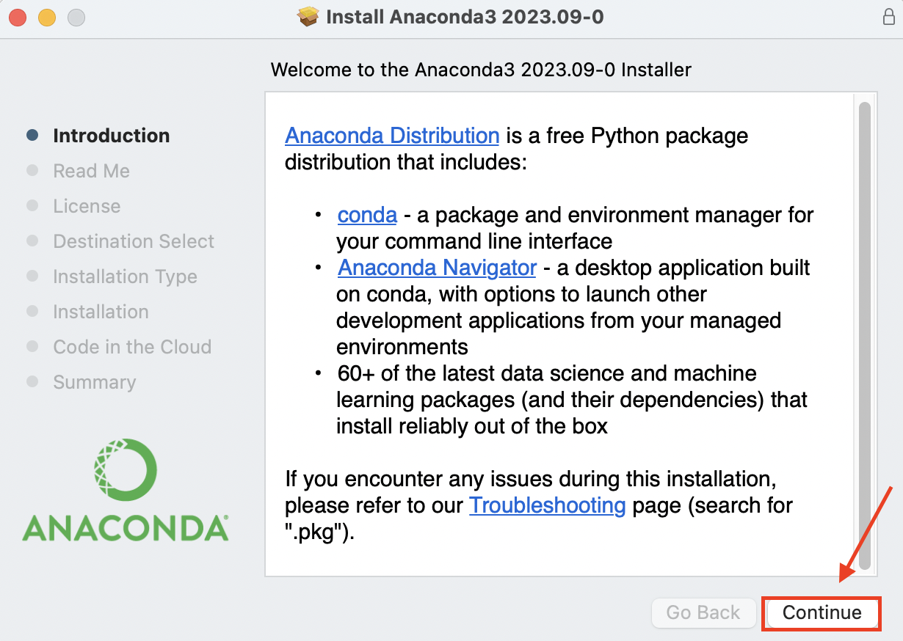
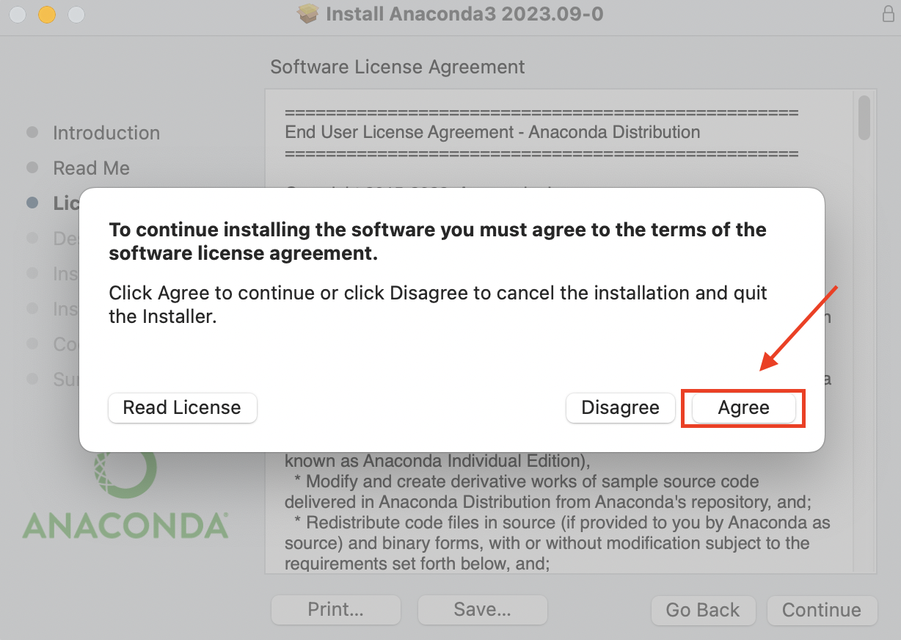
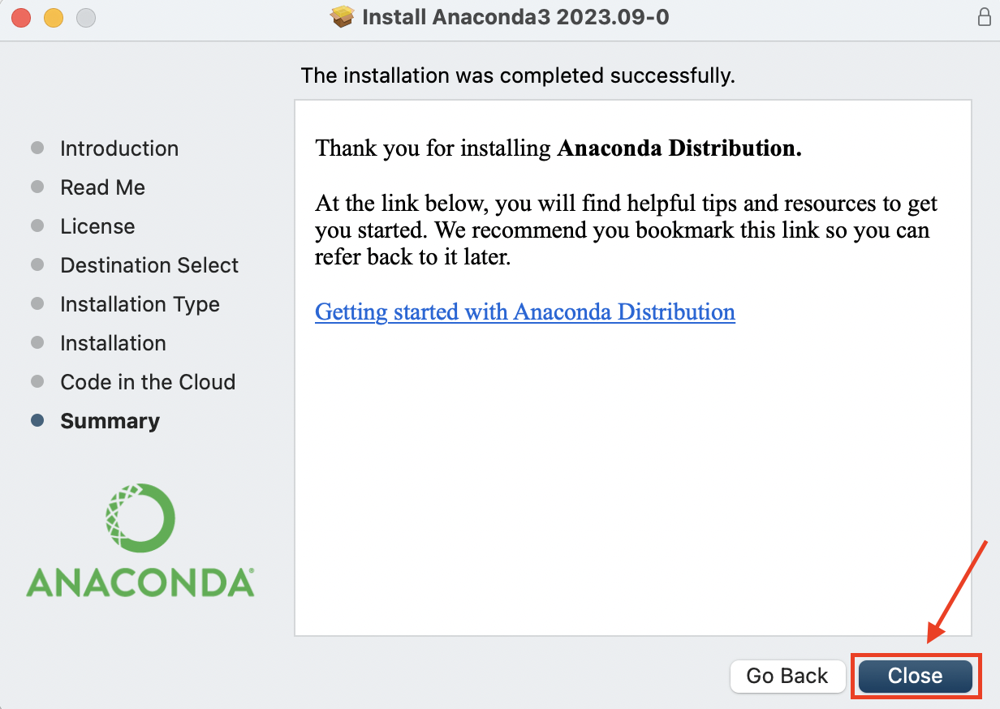
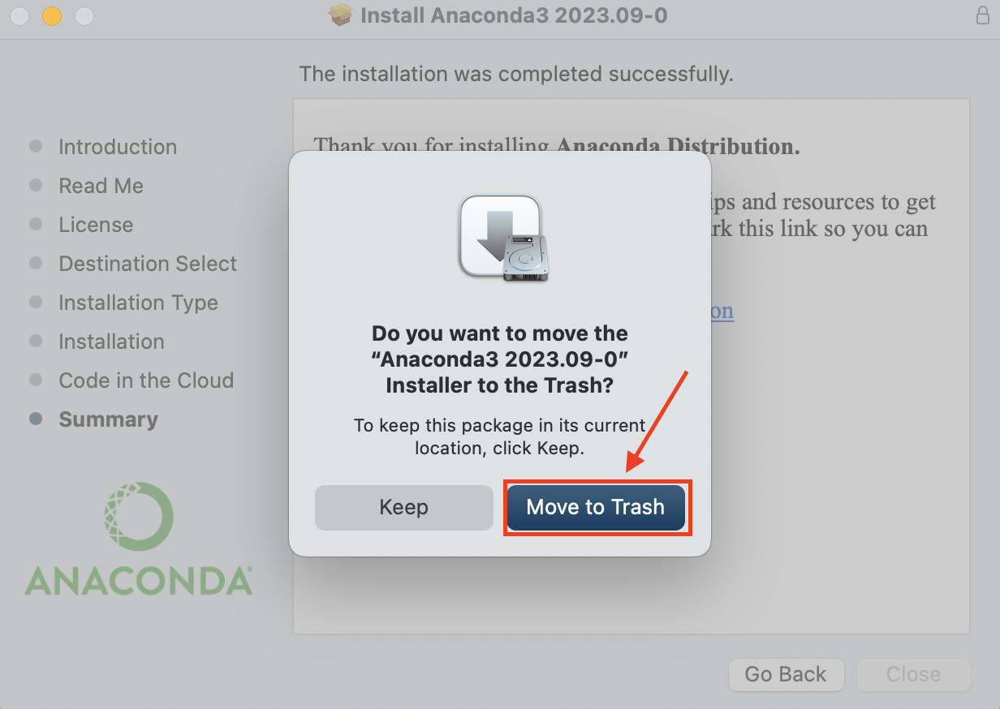

Anaconda and Spyder Installation Guide for macOS
Introduction
This guide will lead you through the process of installing Anaconda, a popular Python distribution, on your macOS computer. Anaconda provides a convenient way to manage Python packages and environments, and it includes Spyder, a powerful IDE for scientific computing.
Prerequisites
Before you begin, make sure you have the following:
- A macOS computer.
- An internet connection.
- Adequate disk space for the installation.
Installation Steps
1. Download Anaconda
Visit the Anaconda download page at https://www.anaconda.com/download.
2. Choose the macOS Installer
Click on the “Download” button under the macOS section depending on your System-on-chip (Intel/M1/M2) to download the Anaconda installer for macOS.

3. Run the Installer
- Locate the downloaded file, usually in your “Downloads” folder.
- Double-click the Anaconda disk image (
.dmg) file to open it and click “Allow” when prompted.

4. Follow the Installer Wizard
- Follow on-screen instructions to begin the installation.
- Read and accept the license agreement when prompted.


5. Install Anaconda
Click the “Install” button to start the installation process. This may take a few minutes.

6. Complete the Installation
Once installation is complete, you’ll see a confirmation message. Click “Continue” and close the installation wizard by clicking “Close”.


7. Move the Installer File to Trash (Optional)

Conclusion
Congratulations! You’ve successfully installed Anaconda and Spyder on your macOS computer. Utilize Spyder for scientific computing and Python development.
For further guidance on using Anaconda, refer to the official documentation at https://docs.anaconda.com/.
If you encounter any issues or have questions, seek assistance from the Anaconda community or consult the documentation for troubleshooting tips.